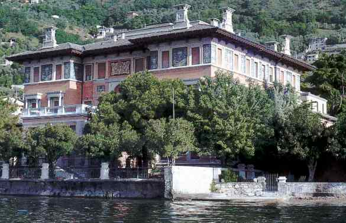

Conference Home
The Workshop on Categorical Algebra CatAlg2015, Recent developments and future perspectives, is focused on the structural study of algebraic categories, with a specific attention to the semi-abelian setting.
CatAlg2015 ideally continues the project started with the meeting organized in Milano in 2006, and continued in Gargnano in 2011.

The conference acknowledges the support of: Université catholique de Louvain | Dipartimento di Matematica - Milano | Dipartimento di Matematica e Informatica - Palermo